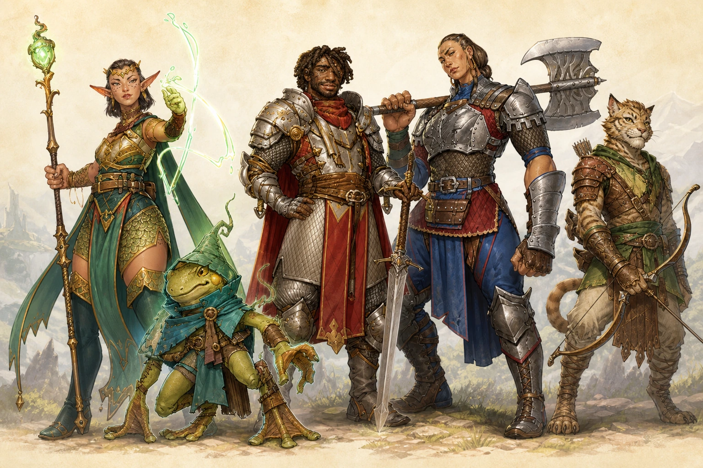
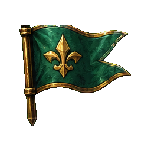
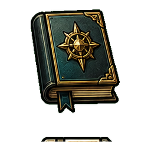
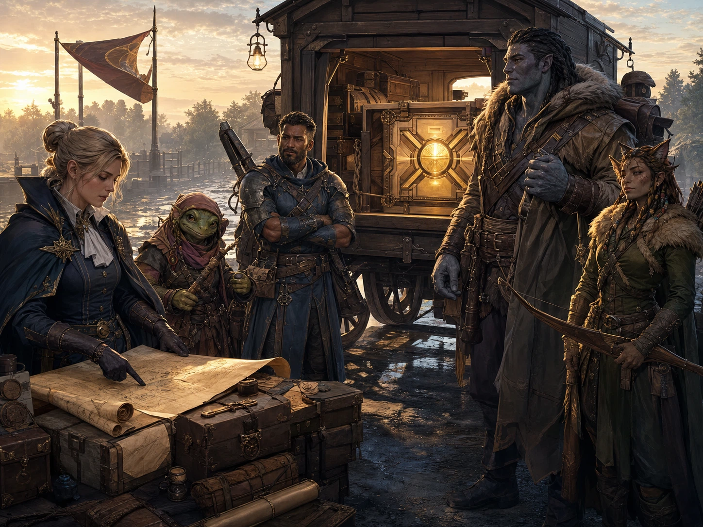

GM quick phrases
Session Zero Cue Cards
Short reference cards for the new Session Zero material: welcome, logistics, player introductions, rating, pacing, safety, expectations, rules, character orientation, connections, and launch.
SZ-00
Welcome to the Goldspire Messengers

Player cue: This is a beginner-friendly Daggerheart one-shot. You do not need to know the rules ahead of time. We will learn by playing.
- You are hired contractors or trusted associates escorting a sealed delivery through the Goldspire Territories.
- The job looks simple. It will not stay simple.
- Tone: sincere fantasy adventure, corporate satire, and a little dark whimsy.
- Share spotlight, ask questions, pass when needed, help other characters look cool, and respect safety tools.
GM cue
Say the welcome plainly, then tell the table that the rules will be introduced only as needed. Confirm that everyone can see the player display and has the right handouts.
- All players seated
- Session Zero mode selected
- Safety tools ready
- Handouts visible
- Player display visible
SZ-00B
Welcome to the table
Player cue: This is a standalone one-shot at Mox. We are here to tell a complete story tonight, learn the game as we go, and make sure everyone has enough information to participate comfortably.
- Your GM is Kyle, he/him. Kyle has 15+ years running in-person and online TTRPGs.
- GM style for Daggerheart: story-first, roleplay-friendly, and mechanics in service of the table's fun.
- Kyle plays the world, keeps the rules moving, asks questions, and helps everyone get spotlight.
- You play one character. Say what they try to do, ask questions, and make choices from their point of view.
GM cue
Welcome everyone by name if possible. Say: I'm Kyle, he/him, and you can call me Kyle. I've been running TTRPGs for 15+ years, both in person and online. For Daggerheart, my style is story-first and roleplay-friendly: the mechanics are here to support the table's fun and help us resolve risky moments, not to make you memorize a rulebook. I play the world, frame scenes, make rulings, and help everyone get time in the spotlight. You play one character and tell me what they try to do. Before we begin, let's confirm end time, breaks, bathrooms, drinks, phone expectations, and any Mox house policies.
- Introduce yourself as GM
- Name/pronouns: Kyle, he/him
- Mention 15+ years running in-person and online TTRPGs
- State story-first, roleplay-friendly Daggerheart style
- Confirm headcount, seats, names, and any latecomers
- Confirm session length and target end time
- Cover Mox house policies or ask staff if needed
- Point out bathrooms, drinks, and table logistics
- Set phone policy: reference and emergencies are fine, attention stays at the table
- State that tonight is a standalone complete story
SZ-00C
Quick player introductions
Player cue: Before characters, let's meet the people at the table. Short is perfect, and passing is always okay.
- Your name and pronouns if you want to share them.
- Your TTRPG or Daggerheart experience level.
- One fun fact, comfort note, or what you are hoping for tonight.
- You can pass and come back.
GM cue
Before we meet the characters, let's meet each other. Please share your name, your TTRPG or Daggerheart experience level, and one thing you are hoping for tonight. You can pass and come back. I will use this to calibrate how much I explain as we play.
- Each player had a chance to introduce themselves
- Experience levels noted mentally
- Beginner questions welcomed
- Passing was explicitly allowed
SZ-01B
Content rating

Player cue: Think adult PG-13-ish fantasy adventure. There will be combat and danger, but violence descriptions stay light unless the table chooses to make a moment more intense.
- This is an adult game, but not a grimdark or graphic game.
- Likely content: combat, peril, ambushes, monsters, undead, corporate exploitation, fear or memory magic, and morally complicated choices.
- Animal peril may appear. Violence against animals is optional and can be softened, avoided, or redirected.
- If anything I describe or any action at the table makes you uncomfortable, say pause, slow down, rewind, or break.
GM cue
Frame the one-shot as adult PG-13-ish. Say that combat exists, descriptions of violence will be light, animal peril can be avoided or softened, and any player can pause or redirect if something crosses a line.
- Adult PG-13-ish rating explained
- Combat and light violence expectations explained
- Optional animal peril explained
- Pause/redirect permission reinforced
SZ-01C
Tonight's shape

Player cue: We will start with Session Zero, move into the delivery job, follow the route through escalating complications, and take breaks so the table can breathe.
- Session Zero: safety, rules, characters, and connections.
- Opening contract: the sealed delivery and why you took the job.
- Road trouble: the route proves less safe than advertised.
- Hush and investigation: meet people, ask questions, and decide who to trust.
SZ-02
Safety tools
Player cue: You do not need to justify a boundary. If something is not fun, too intense, or not for tonight, we can pause, redirect, fade to black, or move on.
- Open Door: you can step away at any point and return when ready.
- Simple table signal: say pause, slow down, can we rewind, or break.
- If you missed something, ask me to repeat it.
- If I am moving too fast, ask me to slow down.
GM cue
Before we play, I want to keep safety and communication simple. You can step away at any point, ask for a break, ask me to slow down or repeat something, or say pause if something is uncomfortable or confusing. I may talk too fast or interrupt sometimes; you are welcome to interrupt me, ask any question, or tell me to rewind. The story is for everyone at the table.
SZ-02B
How we make this fun together
Player cue: This works best when everyone is engaged, respectful, and helping the table have fun. You are responsible for your own fun and for noticing the other people at the table too.
- Engage with the story and ask questions.
- Invite other players in: ask them what their character thinks, notices, or does.
- Speak when it is your turn, and be mindful of how much space you are taking.
- Only participate at the level you are comfortable with.
GM cue
Set the social expectation directly: this is not only my responsibility as GM. Everyone helps the story work by engaging, listening, asking questions, and making space. Tell players they can interrupt you to ask for help, a repeat, a slower pace, or a pause.
- Participation expectations explained
- Questions welcome at any time
- Shared responsibility named
- Stars and Wishes previewed briefly
SZ-03
How Daggerheart works

Player cue: Daggerheart is narrative fantasy. The GM describes the world, players describe what their characters do, and we roll when the outcome is risky, uncertain, or dramatic.
- Describe what your character tries to do.
- If it is risky or uncertain, roll Hope and Fear d12s.
- Add the trait that fits your approach.
- Tell the GM the total and whether Hope or Fear was higher.
GM cue
Teach only the minimum rules, then move on. Open the GM Rules Drawer for deeper questions, but do not dump the full rulebook before play.
- Duality Dice explained
- Hope/Fear explained
- Experiences explained
- Helping explained
- Outcome matrix explained
SZ-04
Your character sheet
Player cue: In front of you: a character sheet, quick rules card, connection sheet, and safety card. Your sheet tells you who your character is, what they are good at, what they can do, and how much pressure or harm they can take.
- Look for: name and vibe, traits, Experiences, weapons/actions, Hope, Stress, Hit Points, Armor, and class/domain abilities.
- Pick or confirm a character. If you chose ahead of time, make sure the sheet in front of you matches that choice.
- Marlowe Fairwind - playable Loreborne Elf Sorcerer pregen and default package custodian; she receives the job with the crew.
- Barnacle - sneaky rogue with questionable logistics instincts.
GM cue
Tell players what is physically in front of them and point to each major sheet area. Marlowe stays a PC and default package custodian unless replaced; Sabine can be used in the Prologue only as an optional backup NPC job-giver. Either way, everyone receives the job together.
- Characters selected
- Marlowe PC or chosen package custodian status assigned
- Handouts confirmed
SZ-06
Build connections
Player cue: Offer, don't overwrite. A connection prompt is your character's perspective: what they remember, saw, believed, misunderstood, felt, or interpreted.
- The other player can accept it, clarify it, complicate it, soften it, or pass.
- Yes, and...
- Yes, but...
- Can we soften that?
GM cue
Use the prompt bank and Connection Builder. Ask each player for at least one connection in quick mode. Save accepted, clarified, complicated, or passed results.
- At least one connection target per player
- Connection Builder entries saved
- Group memory asked if time allows
- Ask one optional world-connection question per player if the table has energy.
- Log answers as table-contributed canon when they point at a faction, NPC, or location.
SZ-08
Ready to begin

Player cue: You are on a delivery job to the village of Hush with a sealed crate. You know enough to start; the rest will come through play.
GM cue
Confirm the checklist, then jump cleanly to the Prologue. Do not reopen planning unless safety or basic readiness is unresolved.
- Safety tools explained
- Safety intake reviewed if used
- Characters chosen or built
- Marlowe PC or chosen package custodian status assigned
- Connections recorded
- Starting knowledge aligned
- Rules snapshot delivered
- Player display ready
- Prologue ready